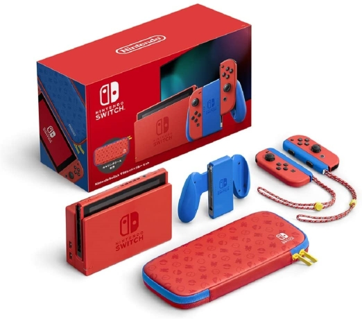
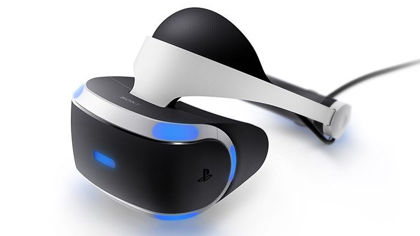
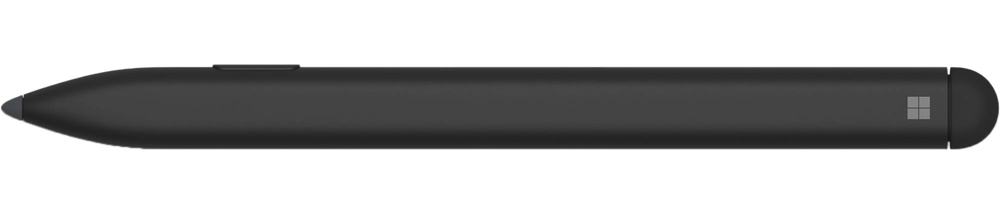
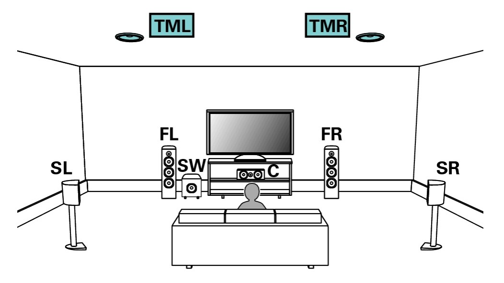

今年買って良かったもの10選（2021年）

みなさんこんにちは！元素さんです。今年もほとんど終わりですね。さて今年も年末恒例のこの記事がやってまいりました。
昨年ほど豪勢なお買い物をしていませんでしたが、なんとか10選リストアップできました。
目新しい物はさほど多くはありませんが紹介していこうと思います。いくぞー！(✿ﾟ▽ﾟ)ノ
目次
- Nintendo Switch マリオレッド×ブルーセット
- Nintendo Switch 有機ELモデル
- PlayStation VR
- Xbox Series S
- Xboxワイヤレスコントローラー Forza Horizon 5リミテッドエディション
- Xbox Eliteコントローラー2 Halo Infiniteリミテッドエディション
- Surface Duo
- Surface Slim Pen
- Nature Remo 3
- 天井スピーカー
- あとがき
Nintendo Switch マリオレッド×ブルーセット

満を持して登場したNintendo Switch本体のカラーバリエーション。発売直後から使い込んだ初期モデルがボロボロになっていたので、こちらに買い換えました。塗膜がしっかりしているのか初期モデルと比べると傷がつきにくくて良いですね。キャリングケースが同封されてお値段そのままなのも、お買い得感があります。
Switchの通常モデルを持っている人は非常に多いので、持ち寄るとどれが誰の本体かわかりにくくなります。そのため本体のカラーバリエーションが欲しいと熱望していたので、これが買えたことに満足していました。数ヶ月後に有機ELモデルが出るまでは…
Nintendo Switch 有機ELモデル
限定カラーを出した後に新機種を出すのはずるいですよ。これが発表されたとき、マリオレッドを買わなければよかったとちょっと後悔しました。せっかくの限定カラーを手放すわけにもいかないので、有機ELモデルは見送ろうと思っていました。でも欲しい。運は天に任せようということで、抽選販売の結果で決めようと応募しました。結果当選。
普段公共交通機関での移動が多く暇つぶしに車内でゲームをするので、画面が大きく綺麗になったのは明確なメリットですね。テーブルモードを使うことも多いのでキックスタンドの改善がとても嬉しいです。
マリオレッドを据置専用に、有機ELモデルを携帯用にと役割分担する事で少し快適性が向上しました。家に帰るとSwitchをカバンから出してドックに置き、逆に出るときはドックから外して鞄に入れると言う手間がなくなりました。充電する時以外は鞄にSwitchを入れっぱなしにできます。今まではTVでゲームをしようって時に、Switchが鞄に入れっぱなしで取りに行かなきゃならないって場面が多くて嫌でした。
2台持ちでSwitchの使用頻度が上がるはず！…と意気込んでいましたが、思わぬ対抗馬が現れました。それについては後述します。
PlayStation VR

今更ながらPlayStation VRの初期型を購入しました。なぜ初期型かというと単純に安かったからです。本当はHDR映像のパススルーに対応した後期型が欲しかったんですけど、初期型がめっちゃ安かったんですよ。そして新型PSVRが既に発表されているのに、わざわざ初期型を買った目的は3つあります。
まず1つ目は、PSVRがどんなものかお試し利用することです。PSVR独占タイトルをいくつか遊んでみて、存分に楽しめたら新型psvrも買おうと考えています。
次に仕様の検証です。PS5でもDualSenseではなくDualShock4の使用を強制されるタイトルを、何とかしてDualSenseでプレイ出来ないか検証しました。結論を言うとほぼ不可能でした。どうやらDualShock4のライトバーから何らかの特殊な光を出しているらしく、その形状を模したライトを作っても反応しませんでした。また、PS本体と、PSVRプロセッサーユニットの間でどのような信号のやりとりが行われているか気になります。その検証から、複雑化しがちな配線を整理する手段を考えたいです。
最後にして最大の目的は、本来の用途以外での使用です。ブログのネタにしたいので詳細は伏せますが、時間がある時にやってみます。
解像度が低いなどVR機器としては未熟な部分が多々ありますが、特殊仕様が多いので弄るのが楽しいですね。買って正解でした。
Xbox Series S
新型Xboxの安い方、廉価版です。上位機種のSeries Xと比べると、ディスクドライブがオミットされストレージ容量は半分、処理性能も控えめなど、多くの点が削られています。しかし2万円もの価格差と、Wii UやSFCより一回り大きい程度というコンパクトさは多大な魅力だと思います。
購入当時リビングにあったのは古いFull HDのテレビだったので、Xbox Series Sの解像度で充分だろうと思いこちらを購入しました。結果論で言えば、半年ほどで4Kテレビが導入されたり、ストレージが足りなかったりしたのでSeries xを買っておけばよかったなと。しかし、昨今の品薄状況を見るとSeries Sが買えただけでも幸運かなと思っています。
来年はSeries Xを買いたいですね。しかしSeries Xを買ったとしても、持ち運び用にSeries Sを残しておきたいような…。やっぱりね、Xbox Series XもSeries Sも、どっちも魅力的なんですよ。
Xboxワイヤレスコントローラー
Forza Horizon 5リミテッドエディション
いかにもForza Horizonって感じのド派手なデザイン。特にスケルトンのボディから覗く振動モーターに色が塗ってあって、回転するのが見えるのが狂気を感じるほど独創的で好きです。車のハンドルっぽいラバーコートもForzaらしくて良いですね。ゲームソフトの内容に則した、素晴らしいデザインだと思います。これは買うしかないでしょ！
Xbox Eliteコントローラー2
Halo Infiniteリミテッドエディション
Xboxのコントローラーの上位モデル「Eliteコントローラー2」の初のカラーバリエーション。Haloの主人公にしてXboxの看板キャラクター、マスターチーフを模したデザインのコントローラーです。
元々Eliteコントローラー2の通常モデルを気に入って愛用していたので、カラーバリエーションが出たら欲しいと思っていました。購入当時はHaloシリーズを2作（WarsとRecruit）しかやったことが無かったので買おうか迷いましたが、今ではHalo Infiniteにドハマりしてるので買って正解だったと思います。特にXbox Series XのHaloモデルは予約争奪戦に負けたので、Eliteコントローラー2だけでもHaloグッズを入手できて良かったです。
Surface Duo
Microsoftの2画面折りたたみAndroid端末です。スマホにしては大きい画面を2つ備え合わせると8.1インチなので、分類するならファブレット（PhoneとTabletの合成語）でしょうか。私にとって買うまでは使用感が全く予想出来ない未知の端末だったので、サブ機になればいいかなくらいに思って買いました。結果は予想以上。メイン機とサブ機を両方駆逐して、その後のメイン機になりました。
かつてはメイン機は連絡とカメラくらいにしか使っていませんでした。一方Surface Duoは幅広い用途で活躍しています。画面が大きいのでタブレットとしてブラウジングに使ったり、Surface Slim Penでメモ書きをしたり。大画面なので文字入力が快適です。
最近特に気に入っている用途がXbox Cloud Gamingです。Surface Duoを横向き、まるでDSのように持つと、上画面にゲーム映像、下画面に操作部が表示されます。操作する際指がゲーム画面を阻害しないので非常に快適です。さらに通信速度が他の端末よりも速く、走行中の電車内でもクラウドゲーミングに支障がありません。まさしくXbox Cloud Gamingに最適なデバイスでしょう。Surface DuoでXbox Cloud Gamingが快適すぎて、外出時の暇つぶしがSwitchの独壇場ではなくなりました。
詳しくはまた改めてレビューしますが、私にとっては携帯端末の最適解でした！ 間違いなく今年のベストバイ。やっぱりね、Microsoft Surfaceなんですよ。
Surface Slim Pen

厚さ6㎜かつ充電式になったSurface Penです。Surface Duoのお供として購入しました。通常のSurface Penと違って、Surface Duoの外側に磁石で貼り付けて一緒に持ち運ぶ事ができます。やっぱり指でタッチするより正確に操作できるので良いですね。指紋で画面が汚れる頻度も低減できます。唯一の欠点はSurface DuoからSlim Penへ給電できない事ですね。たまに電池切れします。Duo2だと給電できるので、やっぱりDuo2が欲しくなりますね。
Nature Remo 3
照明やエアコン、TVやXboxなど様々な電化製品を制御できるスマートリモコンです。赤外線リモコンを使った機器なら信号を登録する事で何でも制御できます。設定すれば専用スマホアプリやGoogleアシスタントなどで、いつでもどこでも登録した機器を操作できます。
私が購入したRemo 3は温度、湿度、照度、人感などのセンサーがあり、アプリでいつでも数値を確認できます。またセンサーやスマホの位置情報に応じて、予め登録した操作を行う自動化機能もあります。しかし条件を1個しか指定出来ないので痒い所に手が届かない感じです。
とりあえず外出先から自室のエアコンを制御して、帰宅するまでに適温にする事が目的だったのでOKです。IFTTTと連携できるみたいなので色々試してみたいですね。
天井スピーカー

元素さんと言えば音響、というイメージが強いでしょう。今年は控えめに、1つだけ変化がありました。ゲーム部屋の天井にトップスピーカーを設けました。今まではイネーブルドスピーカーという、上方に音を投射して天井で反射させる事で上の音を表現するものを使っていました。とあるレコーディングエンジニアの方が「反射音は直接音より音の鮮度が落ちる」と言っていたので、無理して天井にスピーカーを付けました。
確かに音の明瞭さや存在感は増しましたが、設置位置が的確ではなかったので音が空間を満たす感じは少し損なわれました。適正位置に設置できるなら断然トップスピーカーの方が良いんですけど、無理してまで付けなくても良いかなというのが正直な感想です。それだけイネーブルドスピーカーが優秀なんですよね。いつか適正位置にトップスピーカーを設けたいです。
あとがき
昨年の記事で「師走という言葉の通り忙しい日々を送っている」「来年は穏やかに過ごせたら良い」と書きましたが、実際にはより一層忙しくなってしまいました。来年も忙しくなりそうです。昨年と比べると一見見劣りするラインナップでしたが、TVを比較対象から外せばそんなことないですね。来年はどんなお買い物をするのやら。来年は「ラップトップPCを買い替えたい」とか「作業部屋を刷新したい」とか「あんまり親孝行してないから両親に何かプレゼントしたいなぁ」とか色々考えていますが、どれも莫大な費用がかかるので難しいです。政府が100万円くらい配ってくれないかな…いやもっとほしい！（暴論（ハイパーインフレ待ったなし）
とにかく、来年が今年よりたのしい一年になる事を祈るばかりです。よいお年を！